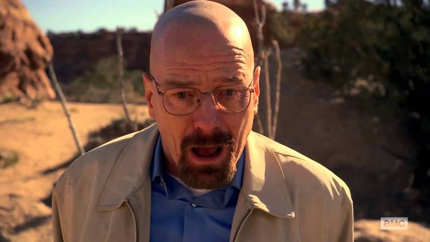
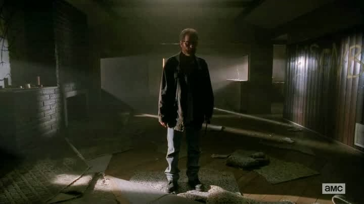
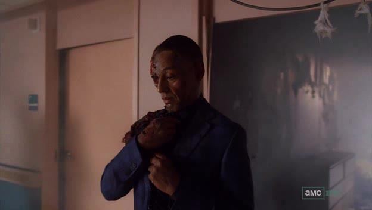
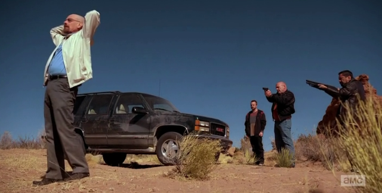

Um episódio marcante de "Breaking Bad", ganhou reconhecimento como o melhor da série por diversas razões. Sua intensidade dramática, repleta de reviravoltas impactantes, destacou-se. As atuações excepcionais de Bryan Cranston, Aaron Paul e Anna Gunn contribuíram para a profundidade emocional. A direção habilidosa de Rian Johnson e a cinematografia impressionante elevaram a experiência visual. Além disso, o episódio foi crucial para o desenvolvimento do personagem de Walter White, marcando um ponto alto na narrativa e preparando o terreno para os eventos finais da série. Esses elementos combinados solidificaram "Ozymandias" como um marco na televisão.
"Felina", o episódio final de "Breaking Bad", destaca-se como um desfecho poderoso e emocional. Walter White busca redenção e enfrenta as consequências de suas ações. O episódio é marcado por confrontos intensos, simbolismos profundos e atuações memoráveis. Proporciona um encerramento narrativo satisfatório, amarrando pontas soltas e concluindo a jornada dos personagens. "Felina" é elogiado por sua conclusão impactante, cuidadosa abordagem narrativa e seu lugar como um dos episódios mais memoráveis da televisão.
Walter "Face Off", um episódio crucial de "Breaking Bad", se destaca por um confronto épico entre Walter White e Gustavo Fring. Com um plano elaborado e uso único de elementos químicos, o episódio mantém uma narrativa intensa, criando momentos de grande tensão. Além disso, contribui para o desenvolvimento de Jesse Pinkman e tem repercussões duradouras na trama geral, alterando dinâmicas de poder. A direção habilidosa e a cinematografia aprimoram a experiência, consolidando "Face Off" como um episódio memorável e impactante na série.
"To'hajiilee", um episódio crucial de "Breaking Bad", se desenrola em meio a um tenso confronto no deserto. Hank, Jesse e os membros da gangue de Jack se enfrentam, intensificando a tensão acumulada na trama. Traições e reviravoltas se desdobram, com escolhas impactantes e consequências emocionais. O drama pessoal entre os personagens é explorado, destacando as complexas relações e o peso das decisões tomadas. O clímax explosivo do episódio altera irreversivelmente o rumo da narrativa, preparando o terreno para eventos mais intensos. A direção cuidadosa e o roteiro habilidoso contribuem para a atmosfera carregada de tensão, tornando "To'hajiilee" memorável e impactante na trajetória de "Breaking Bad". A ação, as traições e as consequências emocionais se entrelaçam, solidificando o episódio como um ponto crucial e inesquecível na série.
"Crawl Space", um episódio marcante de "Breaking Bad", destaca-se pela crescente tensão financeira de Walter White. Ao descobrir que seu esconderijo de dinheiro está praticamente vazio, Walter entra em desespero. A atuação intensa de Bryan Cranston, especialmente na cena do "crawl space", captura magistralmente a espiral emocional do protagonista. O momento de clímax, simbolizado pela angustiante cena final, torna-se um ponto crucial na narrativa, alterando irreversivelmente o estado mental de Walter. A direção impactante e a escolha visual da cena contribuem para transmitir a desesperança do personagem. Além do impacto emocional, "Crawl Space" tem repercussões significativas na trama geral, influenciando decisões futuras e eventos subsequentes. Assim, o episódio se destaca não apenas por sua construção de tensão, mas também por seu papel fundamental no desenvolvimento do enredo e do protagonista.

"Granite State", o penúltimo episódio de "Breaking Bad", inicia com a fuga solitária de Walter White para New Hampshire, buscando escapar das ramificações de suas ações. Enquanto enfrenta a solidão e o isolamento, ele reflete sobre as escolhas que o levaram a essa situação. Durante o episódio, revelações impactantes surgem, destacando as consequências devastadoras de suas ações para sua família e parceiros. Mesmo em sua reclusão, Walter elabora um plano para retornar a Albuquerque e confrontar aqueles que o traíram. "Granite State" estabelece um clima tenso e prepara o terreno para o confronto final que ocorrerá no último episódio da série, acrescentando camadas de complexidade à narrativa e intensificando a expectativa para o desfecho de "Breaking Bad".